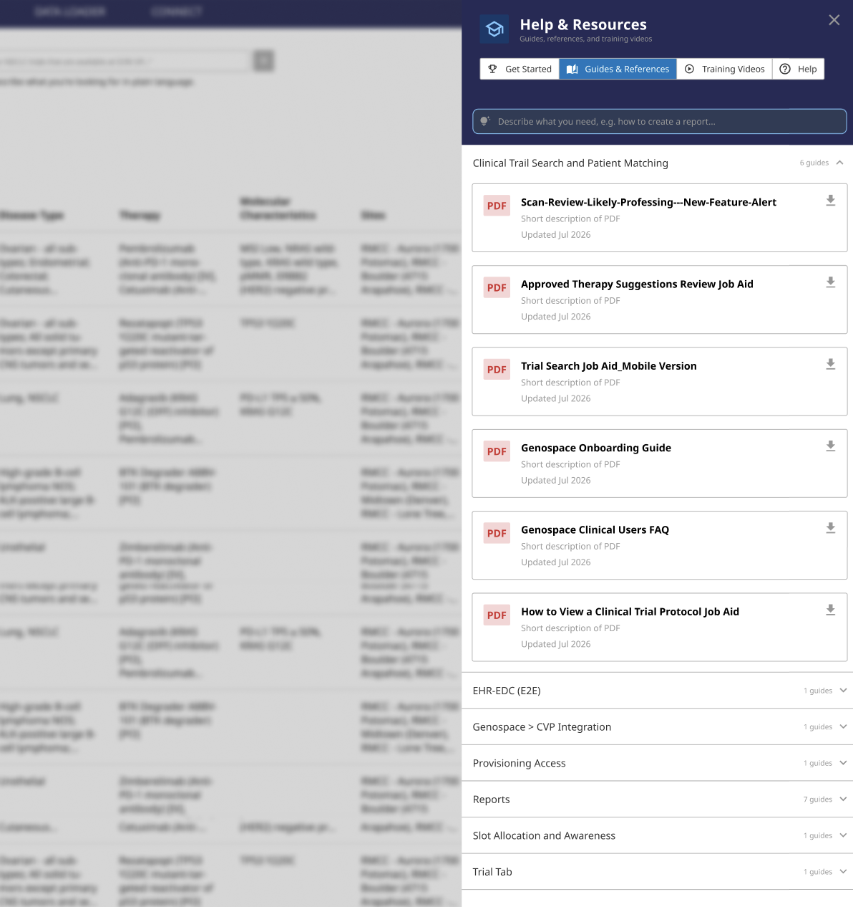
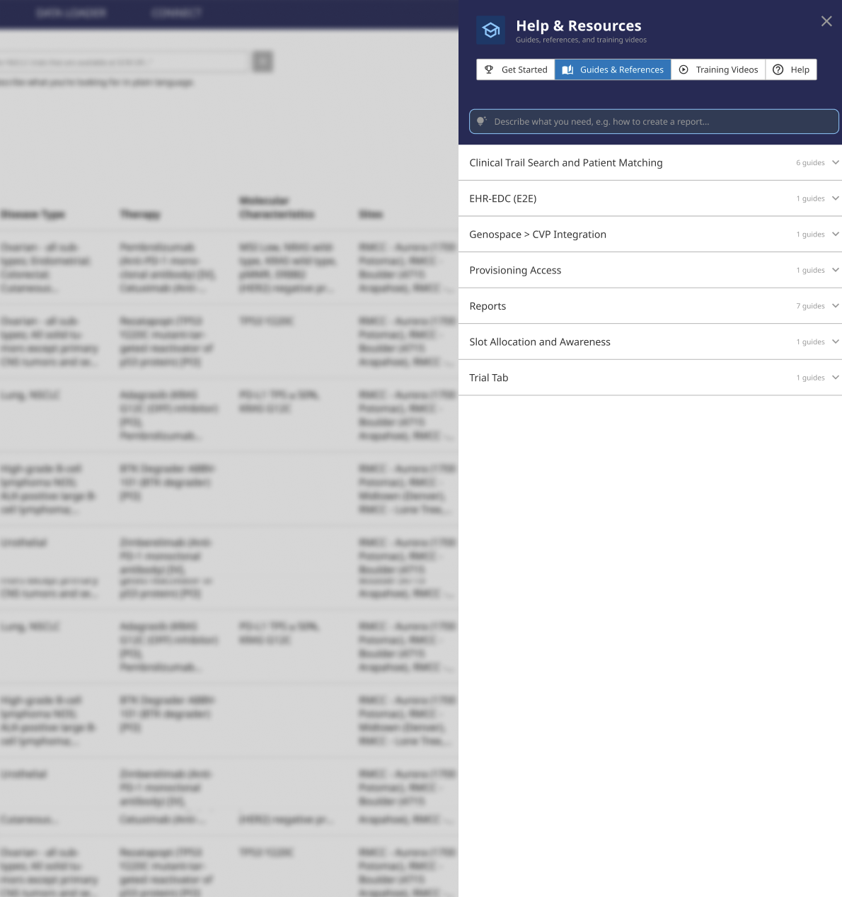
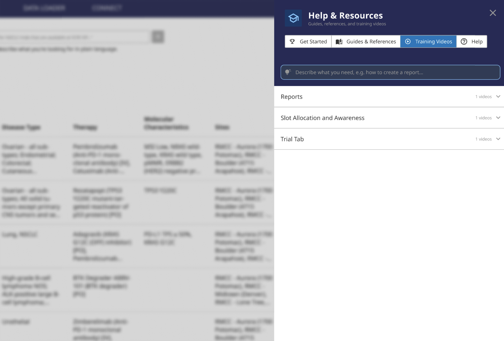
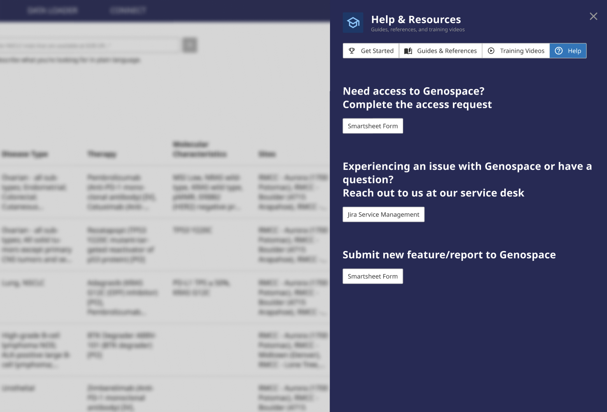

Guided
Give new users a clear starting point instead of expecting them to discover training independently.
PRODUCT ONBOARDING · UX STRATEGY
I designed an in-product onboarding experience that guides new users, personalizes training by role, and gives administrators a scalable way to manage learning content and pathways.
01 · THE PROBLEM
Product onboarding relied heavily on instructor-led training while self-service resources lived outside the product.
Much of the training was led by a single Product Manager through virtual and in-person sessions. As training needs increased, the model became difficult to sustain.
The team already maintained videos, guides, and reference materials, but users still had to leave the product and determine which resources applied to them.
DESIGN QUESTION
How might we bring onboarding into the product, personalize it by role, and make training easier to maintain at scale?
02 · STRATEGY
Instead of asking users to find the right training, the product could bring the right guidance to them.
The experience was organized around role-based pathways so users could focus on the workflows and resources most relevant to their responsibilities.
Give new users a clear starting point instead of expecting them to discover training independently.
Prioritize different training based on each user's responsibilities.
Keep training and support available inside the product whenever users need it.
Give administrators control over content and onboarding pathways as needs change.
03 · NEW USER EXPERIENCE
When a new user first enters the product, a short guided tour introduces the most important areas before deeper role-specific onboarding begins.

01 · Start the tour
New users are invited into a guided introduction to the product.

02 · Welcome
The experience establishes what the tour will cover before
introducing key workflows.

03 · Smart Search
Users learn how to quickly search for relevant clinical trial
information.

04 · Filters
The tour introduces filtering tools that help users narrow
complex trial information.

05 · Your Trial Library
Users are introduced to the area where relevant trial
information can be accessed and managed.

06 · Help & Resources
Support and training remain available from within the product
whenever users need additional guidance.

07 · Tour complete
Users finish the introduction with a clearer understanding of
where to begin.
04 · ROLE-BASED ONBOARDING
After the initial tour, users can move into a more focused learning path based on their responsibilities.

01 · Choose your role
Users begin by selecting the role that best matches their
responsibilities.

02 · View role steps
The product surfaces the training and resources assigned to that
role.

03 · Complete role steps
Users work through recommended resources while keeping track of
progress.
05 · HELP & RESOURCES
Help & Resources gives users continued access to training, reference material, videos, and support without leaving the product.
AI-ASSISTED SEARCH
A persistent assistant at the top of Help & Resources lets users describe what they need and quickly locate relevant support content without manually browsing every category.




06 · ADMIN EXPERIENCE
For onboarding to remain useful over time, administrators need to update content without relying on engineering for routine changes.
CONTENT MANAGEMENT
The admin experience allows authorized users to add, edit, and remove guides and training videos as product workflows and resources evolve.

07 · ROLE & PATHWAY MANAGEMENT
The Flow Builder gives administrators a scalable way to manage onboarding pathways as roles and training requirements change.

Enter the role-management experience from the admin view.

Review and maintain the onboarding experience assigned to a specific user role.

Preview the pathway from the user's perspective before making it available.
08 · DELIVERY STRATEGY
The native experience represents the intended product direction, but implementation requires engineering capacity.
While the native solution waits to be brought into engineering scope, I am also evaluating Userflow as a potential interim way to deliver key onboarding behaviors with less development effort.
The proof of concept is being used to explore new-user onboarding, checklists, contextual guidance, progress tracking, and other behaviors that can inform the eventual native implementation.
09 · SUCCESS
The goal isn't simply to increase clicks on training content. The experience should make onboarding easier for users while reducing dependency on instructor-led support.
Understand whether users complete the most important steps for their role.
Measure whether in-product access increases use of self-service training.
Evaluate whether users can reach important workflows with less direct assistance.
Monitor whether repeated questions and reliance on live training decrease over time.
REFLECTION
What began as a request to increase engagement with training resources became a broader product strategy for scalable onboarding.
Designing both the learner and administrative experiences helped turn onboarding from a collection of resources into a system that could adapt as users, roles, and training needs evolve.